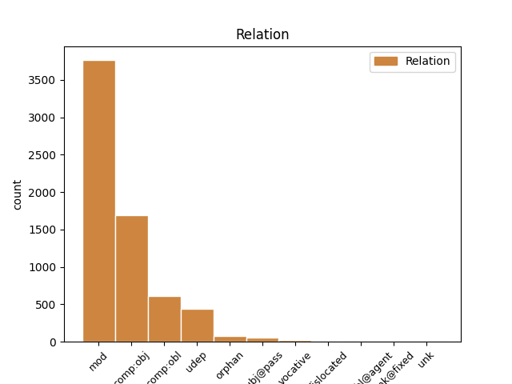
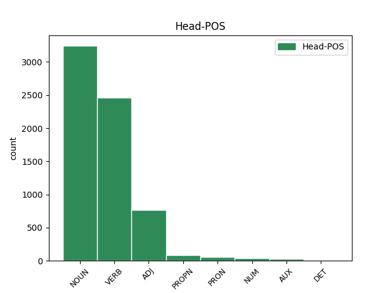
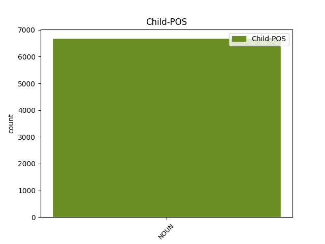

Distribution of features within this leaf



Agreement Rules sorted by frequency.
- When the dependent token is the modifer(mod) of the head token, and the dependent token is NOUN.
1 καὶ _ _ _ _ 0 _ _ _
2 ὅτε _ _ _ _ 0 _ _ _
3 ἤκουσα _ _ _ _ 0 _ _ _
4 καὶ _ _ _ _ 0 _ _ _
5 ἔβλεψα _ _ _ _ 0 _ _ _
6 ἔπεσα _ _ _ _ 0 _ _ _
7 προσκυνῆσαι _ _ _ _ 0 _ _ _
8 ἔμπροσθεν _ _ _ _ 0 _ _ _
9 τῶν _ _ _ _ 0 _ _ _
10 ποδῶν πούς NOUN Nb Case=Gen|Gender=Masc|Number=Plur 0 _ _ _
11 τοῦ _ _ _ _ 0 _ _ _
12 ἀγγέλου ἄγγελος NOUN Nb Case=Gen|Gender=Masc|Number=Sing 10 mod _ ref=REV_22.8
13 τοῦ _ _ _ _ 0 _ _ _
14 δεικνύοντός _ _ _ _ 0 _ _ _
15 μοι _ _ _ _ 0 _ _ _
16 ταῦτα _ _ _ _ 0 _ _ _
1 μαρτυρῶ _ _ _ _ 0 _ _ _
2 ἐγὼ _ _ _ _ 0 _ _ _
3 παντὶ _ _ _ _ 0 _ _ _
4 τῷ _ _ _ _ 0 _ _ _
5 ἀκούοντι ἀκούω VERB V- Case=Dat|Gender=Masc|Number=Sing|Tense=Pres|VerbForm=Part|Voice=Act 0 _ _ _
6 τοὺς _ _ _ _ 0 _ _ _
7 λόγους λόγος NOUN Nb Case=Acc|Gender=Masc|Number=Plur 5 comp:obj _ ref=REV_22.18
8 τῆς _ _ _ _ 0 _ _ _
9 προφητείας _ _ _ _ 0 _ _ _
10 τοῦ _ _ _ _ 0 _ _ _
11 βιβλίου _ _ _ _ 0 _ _ _
12 τούτου _ _ _ _ 0 _ _ _
1 ὁ _ _ _ _ 0 _ _ _
2 φωστὴρ _ _ _ _ 0 _ _ _
3 αὐτῆς _ _ _ _ 0 _ _ _
4 ὅμοιος ὅμοιος ADJ A- Case=Nom|Degree=Pos|Gender=Masc|Number=Sing 0 _ _ _
5 λίθῳ λίθος NOUN Nb Case=Dat|Gender=Masc|Number=Sing 4 comp:obl _ ref=REV_21.11
6 τιμιωτάτῳ _ _ _ _ 0 _ _ _
7 ὡς _ _ _ _ 0 _ _ _
8 λίθῳ _ _ _ _ 0 _ _ _
9 ἰάσπιδι _ _ _ _ 0 _ _ _
10 κρυσταλλίζοντι _ _ _ _ 0 _ _ _
1 οἱ _ _ _ _ 0 _ _ _
2 θεμέλιοι _ _ _ _ 0 _ _ _
3 τοῦ _ _ _ _ 0 _ _ _
4 τείχους _ _ _ _ 0 _ _ _
5 τῆς _ _ _ _ 0 _ _ _
6 πόλεως _ _ _ _ 0 _ _ _
7 παντὶ _ _ _ _ 0 _ _ _
8 λίθῳ λίθος NOUN Nb Case=Dat|Gender=Masc|Number=Sing 10 udep _ ref=REV_21.19
9 τιμίῳ _ _ _ _ 0 _ _ _
10 κεκοσμημένοι κοσμέω VERB V- Aspect=Perf|Case=Nom|Gender=Masc|Number=Plur|Tense=Past|VerbForm=Part|Voice=Pass 0 _ _ _
1 καὶ _ _ _ _ 0 _ _ _
2 ἡ _ _ _ _ 0 _ _ _
3 γυνὴ _ _ _ _ 0 _ _ _
4 ἦν _ _ _ _ 0 _ _ _
5 περιβεβλημένη _ _ _ _ 0 _ _ _
6 πορφυροῦν _ _ _ _ 0 _ _ _
7 καὶ _ _ _ _ 0 _ _ _
8 κόκκινον _ _ _ _ 0 _ _ _
9 καὶ _ _ _ _ 0 _ _ _
10 κεχρυσωμένη _ _ _ _ 0 _ _ _
11 χρυσῷ _ _ _ _ 0 _ _ _
12 καὶ _ _ _ _ 0 _ _ _
13 λίθῳ _ _ _ _ 0 _ _ _
14 τιμίῳ _ _ _ _ 0 _ _ _
15 καὶ _ _ _ _ 0 _ _ _
16 μαργαρίταις _ _ _ _ 0 _ _ _
17 ἔχουσα _ _ _ _ 0 _ _ _
18 ποτήριον _ _ _ _ 0 _ _ _
19 χρυσοῦν _ _ _ _ 0 _ _ _
20 ἐν _ _ _ _ 0 _ _ _
21 τῇ _ _ _ _ 0 _ _ _
22 χειρὶ _ _ _ _ 0 _ _ _
23 αὐτῆς _ _ _ _ 0 _ _ _
24 γέμων _ _ _ _ 0 _ _ _
25 βδελυγμάτων _ _ _ _ 0 _ _ _
26 καὶ _ _ _ _ 0 _ _ _
27 τὰ _ _ _ _ 0 _ _ _
28 ἀκάθαρτα _ _ _ _ 0 _ _ _
29 τῆς _ _ _ _ 0 _ _ _
30 πορνείας _ _ _ _ 0 _ _ _
31 αὐτῆς _ _ _ _ 0 _ _ _
32 καὶ _ _ _ _ 0 _ _ _
33 ἐπὶ _ _ _ _ 0 _ _ _
34 τὸ _ _ _ _ 0 _ _ _
35 μέτωπον _ _ _ _ 0 _ _ _
36 αὐτῆς _ _ _ _ 0 _ _ _
37 ὄνομα ὄνομα NOUN Nb Case=Nom|Gender=Neut|Number=Sing 38 subj@pass _ ref=REV_17.5
38 γεγραμμένον γράφω VERB V- Aspect=Perf|Case=Nom|Gender=Neut|Number=Sing|Tense=Past|VerbForm=Part|Voice=Pass 0 _ _ _
39 μυστήριον _ _ _ _ 0 _ _ _
1 καὶ _ _ _ _ 0 _ _ _
2 ἴδον _ _ _ _ 0 _ _ _
3 καὶ _ _ _ _ 0 _ _ _
4 ἰδοὺ _ _ _ _ 0 _ _ _
5 ἵππος ἵππος NOUN Nb Case=Nom|Gender=Masc|Number=Sing 0 _ _ _
6 χλωρός _ _ _ _ 0 _ _ _
7 καὶ _ _ _ _ 0 _ _ _
8 ὁ _ _ _ _ 0 _ _ _
9 καθήμενος _ _ _ _ 0 _ _ _
10 ἐπάνω _ _ _ _ 0 _ _ _
11 αὐτοῦ _ _ _ _ 0 _ _ _
12 ὄνομα _ _ _ _ 0 _ _ _
13 αὐτῷ _ _ _ _ 0 _ _ _
14 θάνατος θάνατος NOUN Nb Case=Nom|Gender=Masc|Number=Sing 5 orphan _ ref=REV_6.8
15 καὶ _ _ _ _ 0 _ _ _
16 ὁ _ _ _ _ 0 _ _ _
17 ᾅδης _ _ _ _ 0 _ _ _
18 ἠκολούθει _ _ _ _ 0 _ _ _
19 μετ’ _ _ _ _ 0 _ _ _
20 αὐτοῦ _ _ _ _ 0 _ _ _
1 Ὁμοίως _ _ _ _ 0 _ _ _
2 γυναῖκες γυνή NOUN Nb Case=Voc|Gender=Fem|Number=Plur 3 vocative _ ref=1PET_3.1
3 ὑποτασσόμεναι ὑποτάσσω VERB V- Case=Nom|Gender=Fem|Number=Plur|Tense=Pres|VerbForm=Part|Voice=Pass 0 _ _ _
4 τοῖς _ _ _ _ 0 _ _ _
5 ἰδίοις _ _ _ _ 0 _ _ _
6 ἀνδράσιν _ _ _ _ 0 _ _ _
7 ἵνα _ _ _ _ 0 _ _ _
8 καὶ _ _ _ _ 0 _ _ _
9 εἴ _ _ _ _ 0 _ _ _
10 τινες _ _ _ _ 0 _ _ _
11 ἀπειθοῦσιν _ _ _ _ 0 _ _ _
12 τῷ _ _ _ _ 0 _ _ _
13 λόγῳ _ _ _ _ 0 _ _ _
14 διὰ _ _ _ _ 0 _ _ _
15 τῆς _ _ _ _ 0 _ _ _
16 τῶν _ _ _ _ 0 _ _ _
17 γυναικῶν _ _ _ _ 0 _ _ _
18 ἀναστροφῆς _ _ _ _ 0 _ _ _
19 ἄνευ _ _ _ _ 0 _ _ _
20 λόγου _ _ _ _ 0 _ _ _
21 κερδηθήσονται _ _ _ _ 0 _ _ _
22 ἐποπτεύσαντες _ _ _ _ 0 _ _ _
23 τὴν _ _ _ _ 0 _ _ _
24 ἐν _ _ _ _ 0 _ _ _
25 φόβῳ _ _ _ _ 0 _ _ _
26 ἁγνὴν _ _ _ _ 0 _ _ _
27 ἀναστροφὴν _ _ _ _ 0 _ _ _
28 ὑμῶν _ _ _ _ 0 _ _ _
1 Εὐλογητὸς _ _ _ _ 0 _ _ _
2 ὁ _ _ _ _ 0 _ _ _
3 θεὸς _ _ _ _ 0 _ _ _
4 καὶ _ _ _ _ 0 _ _ _
5 πατὴρ πατήρ NOUN Nb Case=Nom|Gender=Masc|Number=Sing 0 _ _ _
6 τοῦ _ _ _ _ 0 _ _ _
7 κυρίου _ _ _ _ 0 _ _ _
8 ἡμῶν _ _ _ _ 0 _ _ _
9 Ἰησοῦ _ _ _ _ 0 _ _ _
10 Χριστοῦ _ _ _ _ 0 _ _ _
11 ὁ _ _ _ _ 0 _ _ _
12 πατὴρ πατήρ NOUN Nb Case=Nom|Gender=Masc|Number=Sing 5 dislocated _ ref=2COR_1.3
13 τῶν _ _ _ _ 0 _ _ _
14 οἰκτιρμῶν _ _ _ _ 0 _ _ _
15 καὶ _ _ _ _ 0 _ _ _
16 θεὸς _ _ _ _ 0 _ _ _
17 πάσης _ _ _ _ 0 _ _ _
18 παρακλήσεως _ _ _ _ 0 _ _ _
19 ὁ _ _ _ _ 0 _ _ _
20 παρακαλῶν _ _ _ _ 0 _ _ _
21 ἡμᾶς _ _ _ _ 0 _ _ _
22 ἐπὶ _ _ _ _ 0 _ _ _
23 πάσῃ _ _ _ _ 0 _ _ _
24 τῇ _ _ _ _ 0 _ _ _
25 θλίψει _ _ _ _ 0 _ _ _
26 ἡμῶν _ _ _ _ 0 _ _ _
27 εἰς _ _ _ _ 0 _ _ _
28 τὸ _ _ _ _ 0 _ _ _
29 δύνασθαι _ _ _ _ 0 _ _ _
30 ἡμᾶς _ _ _ _ 0 _ _ _
31 παρακαλεῖν _ _ _ _ 0 _ _ _
32 τοὺς _ _ _ _ 0 _ _ _
33 ἐν _ _ _ _ 0 _ _ _
34 πάσῃ _ _ _ _ 0 _ _ _
35 θλίψει _ _ _ _ 0 _ _ _
36 διὰ _ _ _ _ 0 _ _ _
37 τῆς _ _ _ _ 0 _ _ _
38 παρακλήσεως _ _ _ _ 0 _ _ _
39 ἧς _ _ _ _ 0 _ _ _
40 παρακαλούμεθα _ _ _ _ 0 _ _ _
41 αὐτοὶ _ _ _ _ 0 _ _ _
42 ὑπὸ _ _ _ _ 0 _ _ _
43 τοῦ _ _ _ _ 0 _ _ _
44 θεοῦ _ _ _ _ 0 _ _ _
1 ὁ _ _ _ _ 0 _ _ _
2 θρόνος _ _ _ _ 0 _ _ _
3 σου _ _ _ _ 0 _ _ _
4 ὁ _ _ _ _ 0 _ _ _
5 θεός _ _ _ _ 0 _ _ _
6 εἰς _ _ _ _ 0 _ _ _
7 τὸν _ _ _ _ 0 _ _ _
8 αἰῶνα αἰών NOUN Nb Case=Acc|Gender=Masc|Number=Sing 0 _ _ _
9 τοῦ _ _ _ _ 0 _ _ _
10 αἰῶνος αἰών NOUN Nb Case=Gen|Gender=Masc|Number=Sing 8 unk _ ref=HEB_1.8
11 καὶ _ _ _ _ 0 _ _ _
12 ἡ _ _ _ _ 0 _ _ _
13 ῥάβδος _ _ _ _ 0 _ _ _
14 τῆς _ _ _ _ 0 _ _ _
15 εὐθύτητος _ _ _ _ 0 _ _ _
16 ῥάβδος _ _ _ _ 0 _ _ _
17 τῆς _ _ _ _ 0 _ _ _
18 βασιλείας _ _ _ _ 0 _ _ _
19 σου _ _ _ _ 0 _ _ _
Disagree Examples:
1 Ἡροδότου _ _ _ _ 0 _ _ _
2 Ἁλικαρνησσέος _ _ _ _ 0 _ _ _
3 ἱστορίης _ _ _ _ 0 _ _ _
4 ἀπόδεξις _ _ _ _ 0 _ _ _
5 ἥδε _ _ _ _ 0 _ _ _
6 ὡς _ _ _ _ 0 _ _ _
7 μήτε _ _ _ _ 0 _ _ _
8 τὰ _ _ _ _ 0 _ _ _
9 γενόμενα _ _ _ _ 0 _ _ _
10 ἐξ _ _ _ _ 0 _ _ _
11 ἀνθρώπων _ _ _ _ 0 _ _ _
12 τῷ _ _ _ _ 0 _ _ _
13 χρόνῳ _ _ _ _ 0 _ _ _
14 ἐξίτηλα _ _ _ _ 0 _ _ _
15 γένηται _ _ _ _ 0 _ _ _
16 μήτε _ _ _ _ 0 _ _ _
17 ἔργα _ _ _ _ 0 _ _ _
18 μεγάλα _ _ _ _ 0 _ _ _
19 τε _ _ _ _ 0 _ _ _
20 καὶ _ _ _ _ 0 _ _ _
21 θωμαστά _ _ _ _ 0 _ _ _
22 τὰ ὁ PRON Pp Case=Nom|Gender=Neut|Number=Plur|Person=3|PronType=Prs 0 _ _ _
23 μὲν _ _ _ _ 0 _ _ _
24 Ἕλλησι Ἕλλην NOUN Nb Case=Dat|Gender=Masc|Number=Plur 22 orphan _ ref=1.1.0
25 τὰ _ _ _ _ 0 _ _ _
26 δὲ _ _ _ _ 0 _ _ _
27 βαρβάροισι _ _ _ _ 0 _ _ _
28 ἀποδεχθέντα _ _ _ _ 0 _ _ _
29 ἀκλεᾶ _ _ _ _ 0 _ _ _
30 γένηται _ _ _ _ 0 _ _ _
31 τά _ _ _ _ 0 _ _ _
32 τε _ _ _ _ 0 _ _ _
33 ἄλλα _ _ _ _ 0 _ _ _
34 καὶ _ _ _ _ 0 _ _ _
35 δι’ _ _ _ _ 0 _ _ _
36 ἣν _ _ _ _ 0 _ _ _
37 αἰτίην _ _ _ _ 0 _ _ _
38 ἐπολέμησαν _ _ _ _ 0 _ _ _
39 ἀλλήλοισι _ _ _ _ 0 _ _ _
1 Ἡροδότου _ _ _ _ 0 _ _ _
2 Ἁλικαρνησσέος _ _ _ _ 0 _ _ _
3 ἱστορίης _ _ _ _ 0 _ _ _
4 ἀπόδεξις _ _ _ _ 0 _ _ _
5 ἥδε _ _ _ _ 0 _ _ _
6 ὡς _ _ _ _ 0 _ _ _
7 μήτε _ _ _ _ 0 _ _ _
8 τὰ _ _ _ _ 0 _ _ _
9 γενόμενα _ _ _ _ 0 _ _ _
10 ἐξ _ _ _ _ 0 _ _ _
11 ἀνθρώπων _ _ _ _ 0 _ _ _
12 τῷ _ _ _ _ 0 _ _ _
13 χρόνῳ _ _ _ _ 0 _ _ _
14 ἐξίτηλα _ _ _ _ 0 _ _ _
15 γένηται _ _ _ _ 0 _ _ _
16 μήτε _ _ _ _ 0 _ _ _
17 ἔργα _ _ _ _ 0 _ _ _
18 μεγάλα _ _ _ _ 0 _ _ _
19 τε _ _ _ _ 0 _ _ _
20 καὶ _ _ _ _ 0 _ _ _
21 θωμαστά _ _ _ _ 0 _ _ _
22 τὰ _ _ _ _ 0 _ _ _
23 μὲν _ _ _ _ 0 _ _ _
24 Ἕλλησι _ _ _ _ 0 _ _ _
25 τὰ ὁ PRON Pp Case=Nom|Gender=Neut|Number=Plur|Person=3|PronType=Prs 0 _ _ _
26 δὲ _ _ _ _ 0 _ _ _
27 βαρβάροισι βάρβαρος NOUN Nb Case=Dat|Gender=Masc|Number=Plur 25 orphan _ ref=1.1.0
28 ἀποδεχθέντα _ _ _ _ 0 _ _ _
29 ἀκλεᾶ _ _ _ _ 0 _ _ _
30 γένηται _ _ _ _ 0 _ _ _
31 τά _ _ _ _ 0 _ _ _
32 τε _ _ _ _ 0 _ _ _
33 ἄλλα _ _ _ _ 0 _ _ _
34 καὶ _ _ _ _ 0 _ _ _
35 δι’ _ _ _ _ 0 _ _ _
36 ἣν _ _ _ _ 0 _ _ _
37 αἰτίην _ _ _ _ 0 _ _ _
38 ἐπολέμησαν _ _ _ _ 0 _ _ _
39 ἀλλήλοισι _ _ _ _ 0 _ _ _
1 Περσέων _ _ _ _ 0 _ _ _
2 μέν _ _ _ _ 0 _ _ _
3 νυν _ _ _ _ 0 _ _ _
4 οἱ _ _ _ _ 0 _ _ _
5 λόγιοι _ _ _ _ 0 _ _ _
6 Φοίνικας _ _ _ _ 0 _ _ _
7 αἰτίους αἴτιος ADJ A- Case=Acc|Degree=Pos|Gender=Masc|Number=Plur 0 _ _ _
8 φασὶ _ _ _ _ 0 _ _ _
9 γενέσθαι _ _ _ _ 0 _ _ _
10 τῆς _ _ _ _ 0 _ _ _
11 διαφορῆς διαφορά NOUN Nb Case=Gen|Gender=Fem|Number=Sing 7 comp:obl _ ref=1.1.1
1 τούτους _ _ _ _ 0 _ _ _
2 γὰρ _ _ _ _ 0 _ _ _
3 ἀπὸ _ _ _ _ 0 _ _ _
4 τῆς _ _ _ _ 0 _ _ _
5 Ἐρυθρῆς _ _ _ _ 0 _ _ _
6 καλεομένης _ _ _ _ 0 _ _ _
7 θαλάσσης _ _ _ _ 0 _ _ _
8 ἀπικομένους _ _ _ _ 0 _ _ _
9 ἐπὶ _ _ _ _ 0 _ _ _
10 τήνδε _ _ _ _ 0 _ _ _
11 τὴν _ _ _ _ 0 _ _ _
12 θάλασσαν _ _ _ _ 0 _ _ _
13 καὶ _ _ _ _ 0 _ _ _
14 οἰκήσαντας _ _ _ _ 0 _ _ _
15 τοῦτον _ _ _ _ 0 _ _ _
16 τὸν _ _ _ _ 0 _ _ _
17 χῶρον _ _ _ _ 0 _ _ _
18 τὸν _ _ _ _ 0 _ _ _
19 καὶ _ _ _ _ 0 _ _ _
20 νῦν _ _ _ _ 0 _ _ _
21 οἰκέουσι _ _ _ _ 0 _ _ _
22 αὐτίκα _ _ _ _ 0 _ _ _
23 ναυτιλίῃσι _ _ _ _ 0 _ _ _
24 μακρῇσι _ _ _ _ 0 _ _ _
25 ἐπιθέσθαι _ _ _ _ 0 _ _ _
26 ἀπαγινέοντας ἀπάγω VERB V- Case=Acc|Gender=Masc|Number=Plur|Tense=Pres|VerbForm=Part|Voice=Act 0 _ _ _
27 δὲ _ _ _ _ 0 _ _ _
28 φορτία φορτίον NOUN Nb Case=Acc|Gender=Neut|Number=Plur 26 comp:obj _ ref=1.1.1
29 Αἰγύπτιά _ _ _ _ 0 _ _ _
30 τε _ _ _ _ 0 _ _ _
31 καὶ _ _ _ _ 0 _ _ _
32 Ἀσσύρια _ _ _ _ 0 _ _ _
33 τῇ _ _ _ _ 0 _ _ _
34 τε _ _ _ _ 0 _ _ _
35 ἄλλῃ _ _ _ _ 0 _ _ _
36 ἐσαπικνέεσθαι _ _ _ _ 0 _ _ _
37 καὶ _ _ _ _ 0 _ _ _
38 δὴ _ _ _ _ 0 _ _ _
39 καὶ _ _ _ _ 0 _ _ _
40 ἐς _ _ _ _ 0 _ _ _
41 Ἄργος _ _ _ _ 0 _ _ _
1 πέμπτῃ _ _ _ _ 0 _ _ _
2 δὲ _ _ _ _ 0 _ _ _
3 ἢ _ _ _ _ 0 _ _ _
4 ἕκτῃ _ _ _ _ 0 _ _ _
5 ἡμέρῃ _ _ _ _ 0 _ _ _
6 ἀπ’ _ _ _ _ 0 _ _ _
7 ἧς _ _ _ _ 0 _ _ _
8 ἀπίκοντο _ _ _ _ 0 _ _ _
9 ἐξεμπολημένων _ _ _ _ 0 _ _ _
10 σφι _ _ _ _ 0 _ _ _
11 σχεδόν _ _ _ _ 0 _ _ _
12 πάντων _ _ _ _ 0 _ _ _
13 ἐλθεῖν _ _ _ _ 0 _ _ _
14 ἐπὶ _ _ _ _ 0 _ _ _
15 τὴν _ _ _ _ 0 _ _ _
16 θάλασσαν _ _ _ _ 0 _ _ _
17 γυναῖκας _ _ _ _ 0 _ _ _
18 ἄλλας _ _ _ _ 0 _ _ _
19 τε _ _ _ _ 0 _ _ _
20 πολλάς _ _ _ _ 0 _ _ _
21 καὶ _ _ _ _ 0 _ _ _
22 δὴ _ _ _ _ 0 _ _ _
23 καὶ _ _ _ _ 0 _ _ _
24 τοῦ _ _ _ _ 0 _ _ _
25 βασιλέος βασιλεύς NOUN Nb Case=Gen|Gender=Masc|Number=Sing 26 mod _ ref=1.1.3
26 θυγατέρα θυγάτηρ NOUN Nb Case=Acc|Gender=Fem|Number=Sing 0 _ _ _